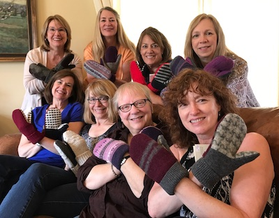

Contact Us

To find the right mittens, plan a mitten party, suggest venues where we might sell our mittens, or to donate sweaters (at least 60 percent wool or cashmere) or fleece garments please email:
To find the right mittens, plan a mitten party, suggest venues where we might sell our mittens, or to donate sweaters (at least 60 percent wool or cashmere) or fleece garments please email: